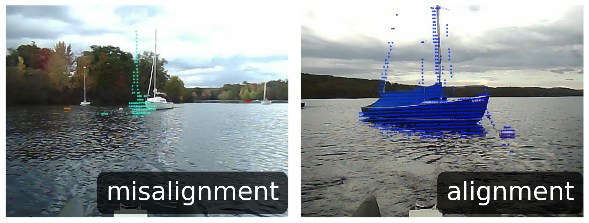
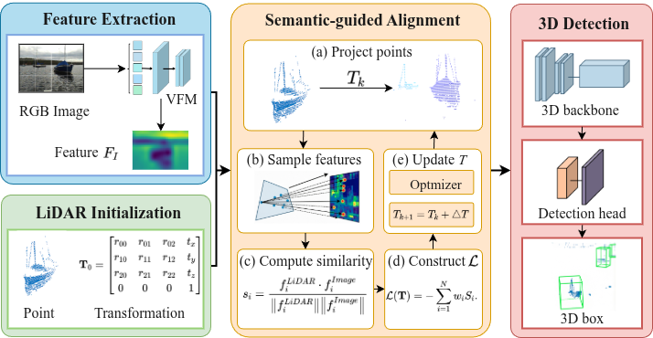
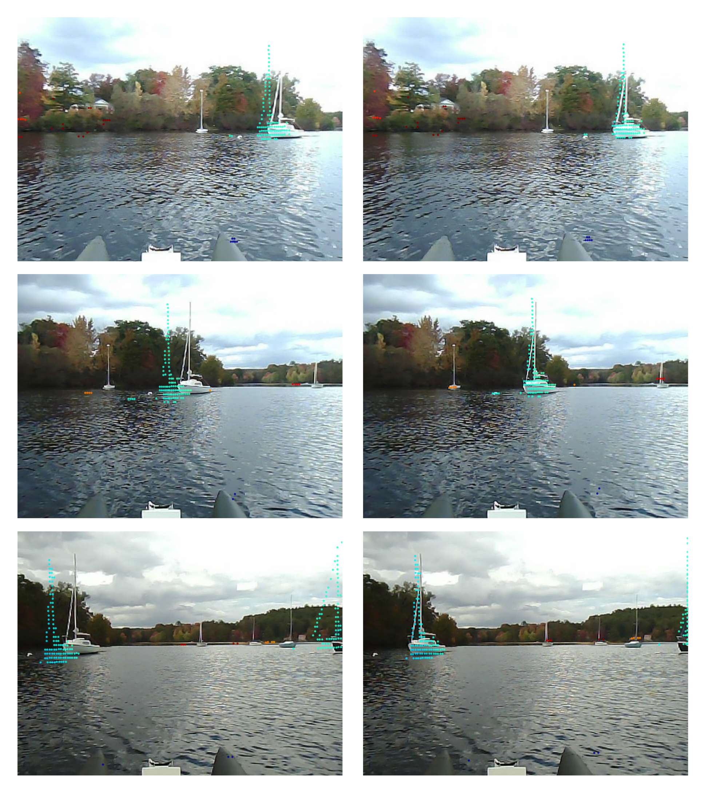
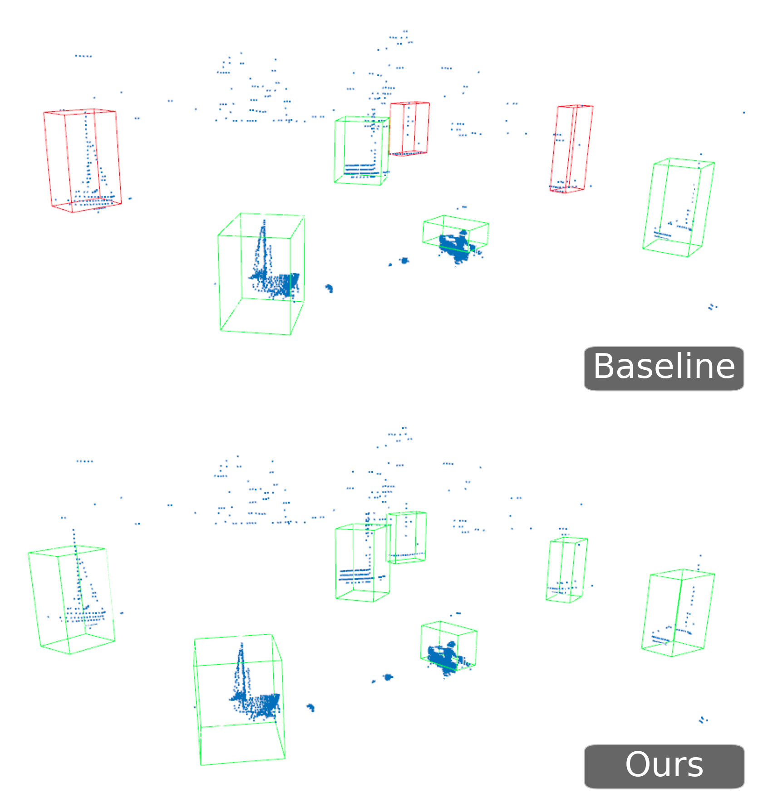

Conference Talk | 15 minutes
SAGA-3D
Semantic-Aligned Geometric Augmentation for Maritime 3D Detection
Motivation
Reliable 3D perception is a safety requirement at sea
USVs must localize vessels, buoys, and obstacles in 3D to support collision avoidance and autonomous decision making.
Why fusion is needed
- Cameras provide dense semantic information about object appearance.
- LiDAR provides accurate geometry and spatial measurements.
- Fusing both modalities should improve robustness in complex maritime scenes.
Maritime Challenge
Good fusion depends on alignment, but alignment is unstable on water
- Waves and currents continuously perturb the sensor rig.
- Calibration drift, vibration, and platform motion create projection errors.
- Lighting variation, reflections, and occlusion make visual sensing less reliable.

Fig. 1 from the paper: motion-induced effects can move projected LiDAR points away from the visual object structure.
Problem Formulation
From geometric calibration to semantic consistency
Inputs
- RGB image: I
- LiDAR point cloud: P = {pi}Ni=1
- Initial camera-LiDAR transform: T0
- Camera intrinsics: K
Projection and features
The objective is to refine T so projected LiDAR observations agree with image semantics.
Core Idea
Use semantic priors to guide geometric augmentation
Use a frozen vision foundation model to obtain dense semantic image features.
Map LiDAR points to the image plane with the current transform estimate.
Measure semantic similarity at projected image locations.
Suppress unreliable correspondences with confidence-aware weights.
Update the transform and train a more robust 3D detector.
Framework
SAGA-3D aligns before detection
- Feature extraction converts the image into dense semantic embeddings.
- Semantic-guided alignment iteratively optimizes the transform.
- The refined representation is passed to the 3D detection backbone and head.

Pipeline: VFM semantic features, LiDAR initialization, semantic-guided alignment, and 3D detection.
Semantic Features
Dense VFM features provide robust visual structure
SAGA-3D uses DINOv2-style pretrained visual features as high-level semantic priors.
Why this matters in maritime scenes
- Water reflections and sky glare weaken low-level appearance cues.
- Objects such as sailboats and buoys may be sparse in LiDAR.
- High-level semantic features create a stronger target for alignment than raw pixels.
Optimization
Confidence-aware alignment reduces noisy correspondences
Semantic similarity
Cosine similarity measures whether projected LiDAR points agree with image semantics.
Weighted objective
Reliable matches dominate the update; low-confidence or negative matches are suppressed.
Experimental Setup
Evaluation on SeePerSea maritime perception benchmark
Dataset
- SeePerSea multimodal maritime perception benchmark.
- Camera-LiDAR scenarios with in-water objects.
Baselines
- TED-S: LiDAR-only detector.
- TED-S + NSA: naive semantic alignment with initial calibration.
- SAGA-3D: adaptive semantic alignment.
Metrics
- BEV mAP: planar localization accuracy.
- 3D mAP: full volumetric detection quality.
- IoU thresholds: 0.5 and 0.7.
Quantitative Results
SAGA-3D improves both BEV and full 3D detection
mAP@0.5 comparison
| Model | Modality | BEV@0.5 | 3D@0.5 |
|---|---|---|---|
| TED-S | L | 65.16 | 51.84 |
| TED-S + NSA | L+C | 64.54 | 55.88 |
| SAGA-3D | L+C | 77.28 | 68.06 |
Qualitative Alignment
Projected points move toward visual object structure
- Baseline projections are visibly offset from boats and sparse objects.
- SAGA-3D produces tighter geometric-semantic correspondence.
- The effect is most important for distant, sparse, or partially occluded targets.

Fig. 3: left column baseline alignment; right column SAGA-3D alignment.
Detection Visualization
Better alignment leads to more consistent 3D boxes
- Baseline results show inaccurate or incomplete bounding boxes.
- SAGA-3D improves spatial consistency in the detected 3D layout.
- The gain is visible in both object localization and box fitting.

Fig. 4: baseline detection at top; SAGA-3D result at bottom.
Conclusion
Semantic alignment is a practical route to robust maritime fusion
Problem
Camera-LiDAR fusion on USVs is degraded by motion-induced misalignment and harsh visual conditions.
Method
SAGA-3D refines cross-modal geometry by maximizing confidence-weighted semantic consistency.
Result
The method improves BEV and 3D mAP on SeePerSea, outperforming LiDAR-only and naive fusion baselines.